MatineeDesigned and built · 13 min read
A film diary that turns my ratings into what to watch next
Matinee is an Android app I designed and built on my own. It keeps a record of the films and series I watch, and every suggestion it makes says why it is there.
- Role
- Design and build, solo
- Why
- My own brief: track what I watch and choose what to watch next
- Timeline
- June to October 2026
- Platform
- Android first, with a web companion
- Stack
- Expo, React Native, TypeScript, SQLite, Firebase, TMDB
- Status
- Working app, version 1.1.0. No usage numbers to share
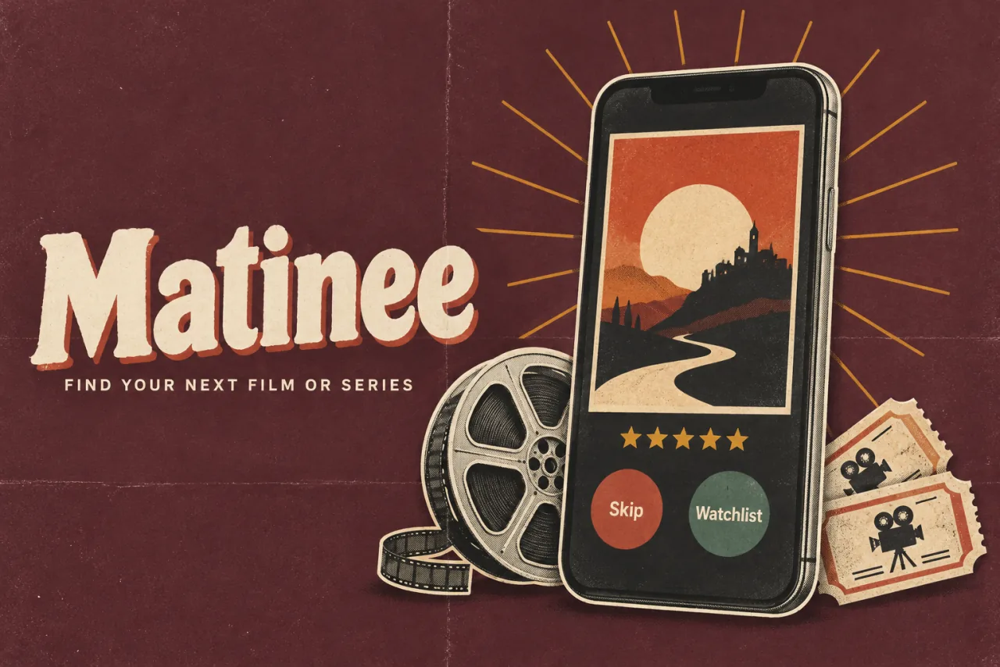
In short
- The problem: finding a title and choosing what to watch tonight are different jobs. I wanted my own record of what I had seen and rated to help with the second one.
- What I built: an Android app with four places (Discover, Upcoming, Stats and Library), a recommendation engine that runs on the phone, and sync for a second device.
- The key idea: variety and reasons are rules in the code. Every pick names its reason, each chosen language gets room in the feed, and no franchise can fill the screen.
- Where it stands: version 1.1.0, in three visual looks over five months. I have no usage numbers, and I have not measured how good the suggestions are.
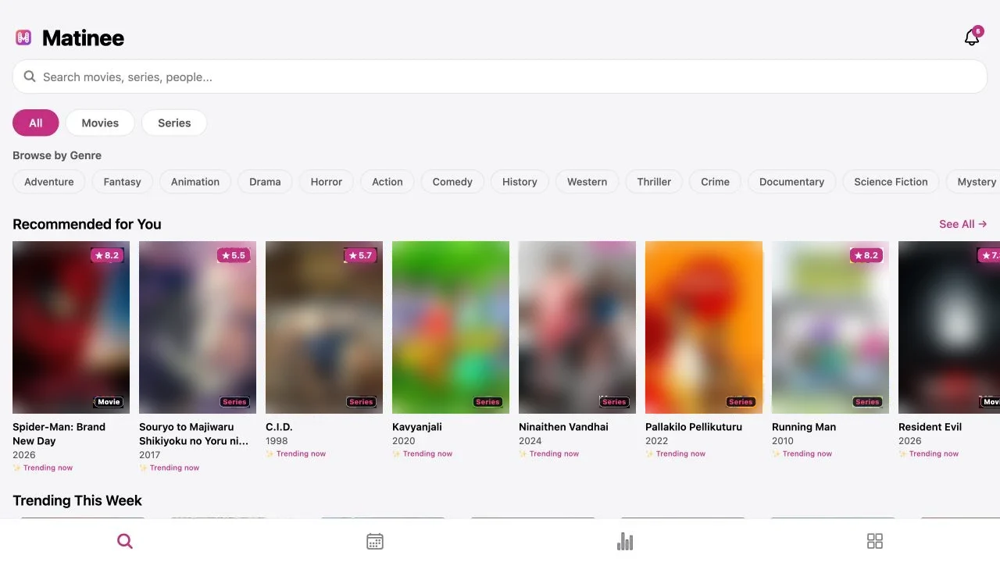
01 Why I built it
Choosing what to watch is a different job from browsing a catalogue
Browsing a catalogue is one job. Matinee is for the step after that: keeping track of what I have watched, saving what I want to see, and picking the next thing from what I already liked.
It started from a brief I set myself. I built it for one phone first, a Samsung Galaxy S24 Ultra, with the web as a companion. One line in my product notes sums it up: Matinee is a tracker, not a streaming browser.
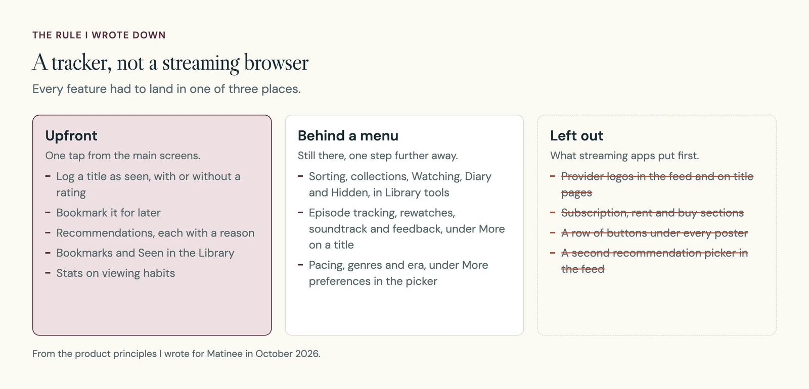
02 How it works
Four places, one button for tonight, and a title page under everything
The app has four places: Discover, Upcoming, Stats and Library. Any poster opens a title page. A floating button on every tab opens Pick for tonight, which asks for a mood, a type and a length and returns three titles.
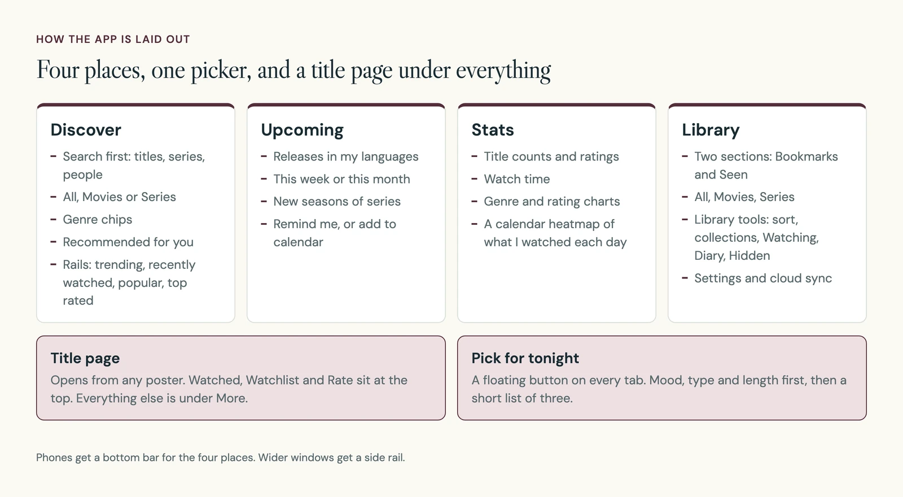
Discover reads from the top: search, then what kind of title, then genre, then the feed.
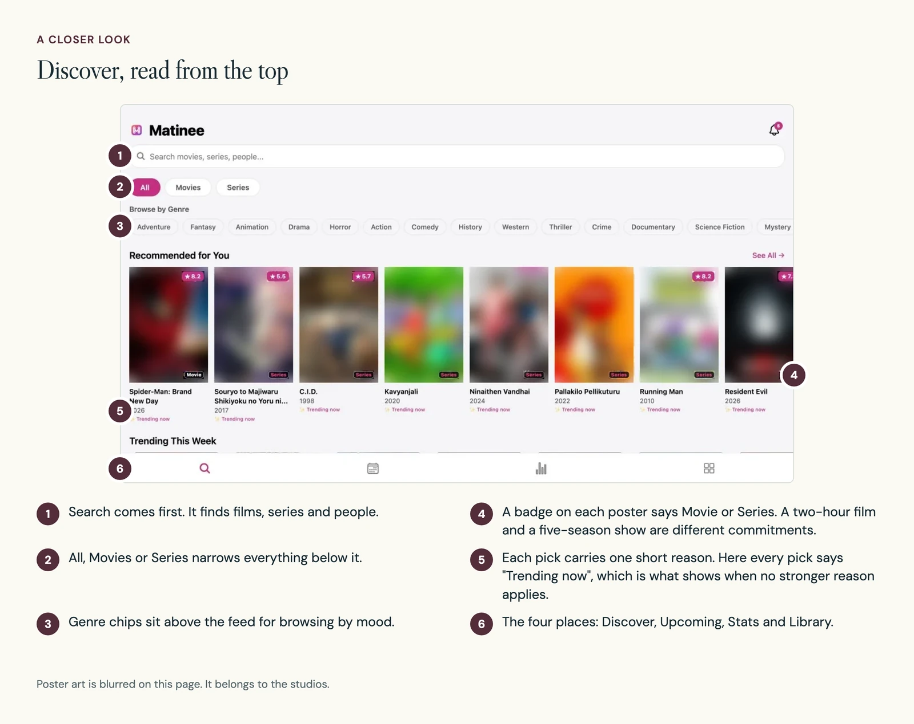
Upcoming lists releases in my chosen languages, with new seasons of series alongside films.
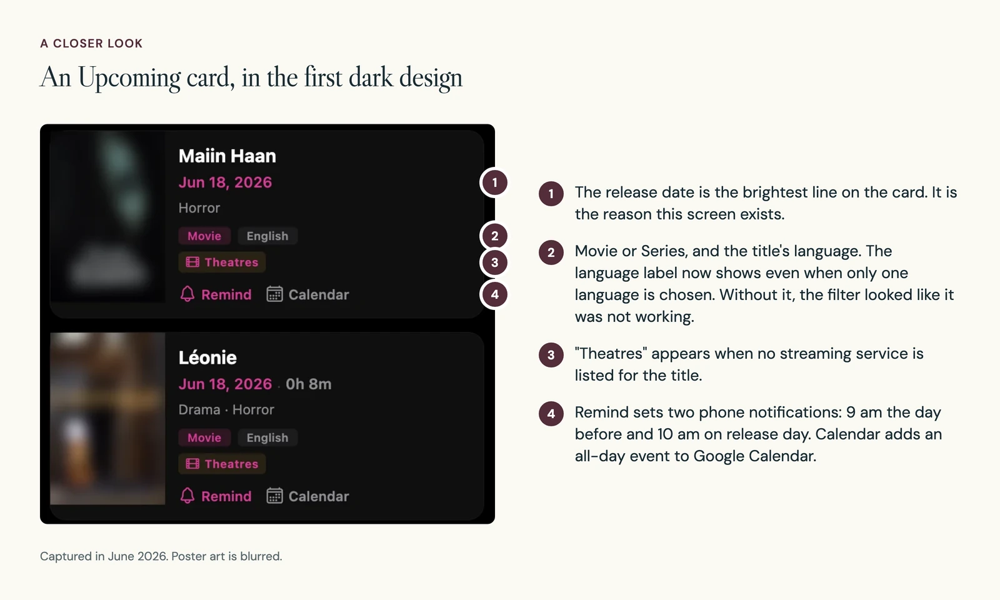
03 Decision 1
Every suggestion says why it is there
What you see: one short line under each pick, such as "Directed by" a director I rate well, "You enjoy Thriller" or "Popular in Kannada". The first version showed it as a banner on the title page.
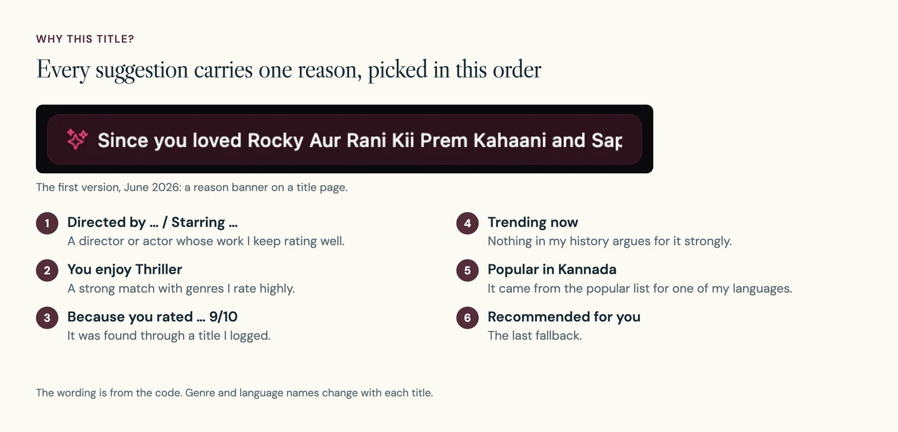
In the build: the feed is put together on the phone in four steps. It reads my library, gathers candidate titles, scores each one, then arranges the feed.
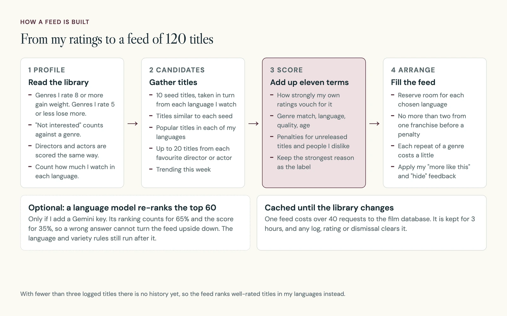
The biggest change was in how candidates are counted. At first, a title found through a film I rated 4 out of 10 counted as much as one found through a 10. A library I had rated with care still produced something close to a popularity chart.
Now each source carries the weight of my rating for it. A 9 or 10 counts fully, a 6 counts about a third, and a 5 or lower hardly counts. A title I logged without rating counts a little more than a 6. This endorsement can add up to 50 points, more than any other term.
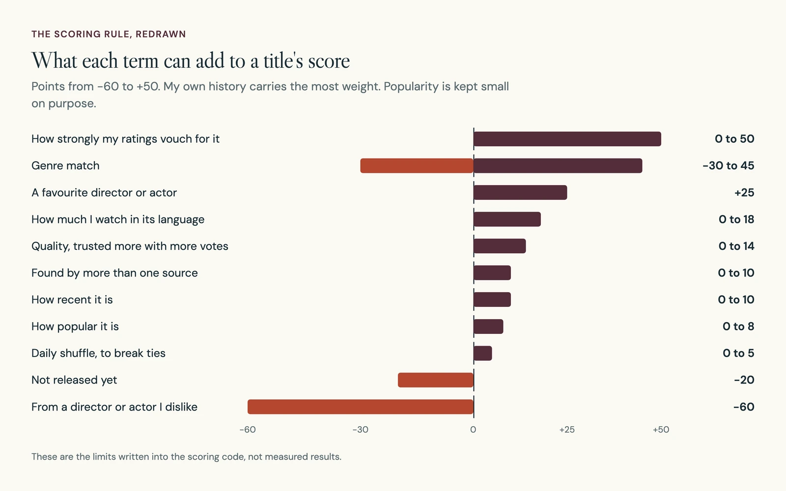
If I add a Gemini key, a language model re-ranks the top 60. I kept it as a re-ranker, not a replacement. Its order counts for 65% and the score for 35%, and the language and variety rules still run afterwards.
04 Decision 2
Each chosen language gets room, and no franchise can fill the feed
What you see: language chips on Upcoming and in settings. The app starts with seven: English, Hindi, Kannada, Tamil, Telugu, Korean and Japanese. Regional titles show up in the feed next to English ones.
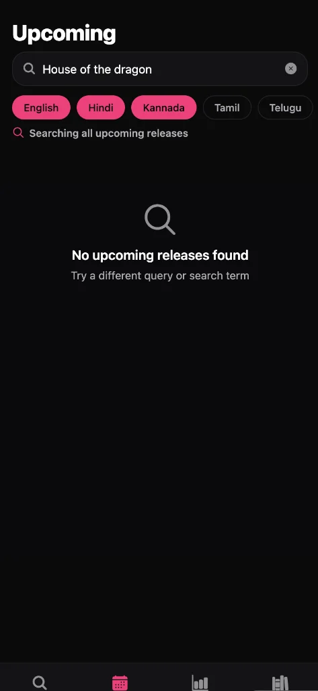
In the build: the first rule gave every chosen language 15% of the feed. That breaks as soon as you choose many. Seven languages asked for 126 slots in a feed of 120, and nothing was left for what I actually watch.
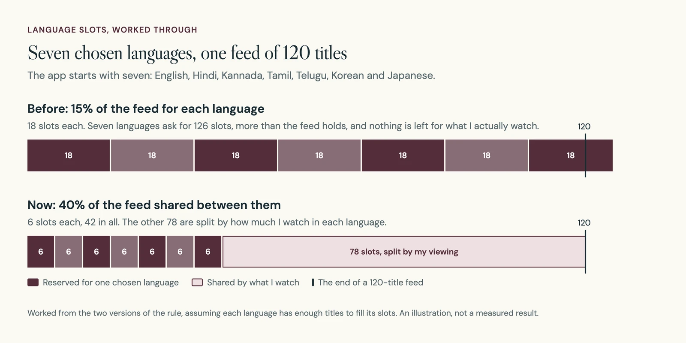
Now 40% of the feed is shared between the chosen languages, and the rest follows how much I watch in each. While the feed fills, two more rules run on every pick. A third title from the same franchise loses 25 points. Each genre already in the feed costs a little more.
05 Decision 3
Logging stays one tap away, and the rest moves under More
What you see: in the first version, a title page had six buttons of the same size. Watching a trailer looked as important as logging the film. Now three stay at the top: Watched, Watchlist and Rate. Everything else is under More.
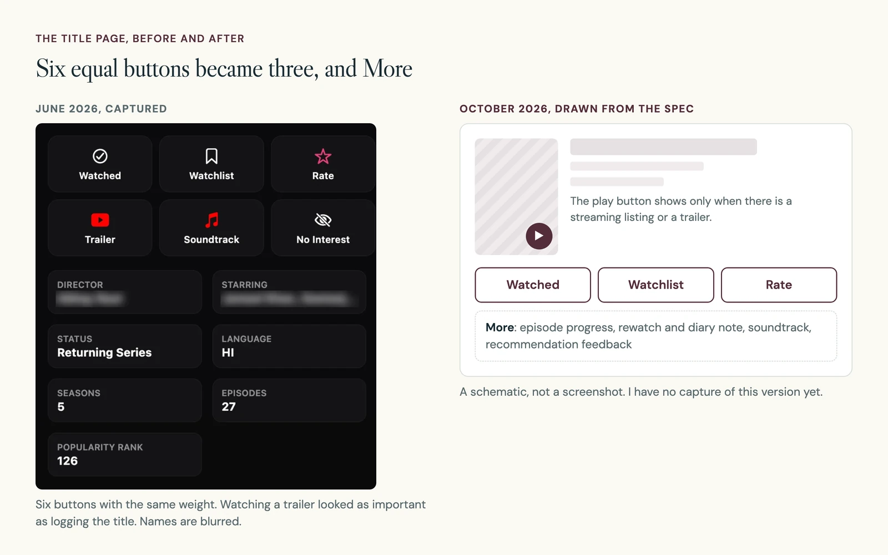
Logging was short from the start. The first version asked when I watched it, with Today and Yesterday as one-tap answers.
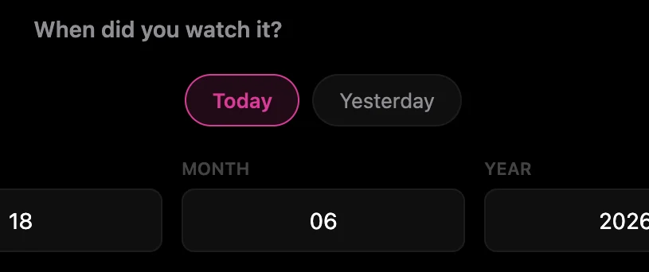
In the build: a title can be logged as seen without a rating. Episode progress is stored apart from ratings, so ticking off episodes never asks for a score. A bookmark can sit alongside a Seen entry and its rating, and removing a title can be undone, ratings and episode logs included. The last three each have a check in the test suite.
06 Decision 4
One source colour, so the rebrand only had to change the hue
What you see: light and dark themes, both drawn from one brand colour. In August I moved the brand from pink to teal.
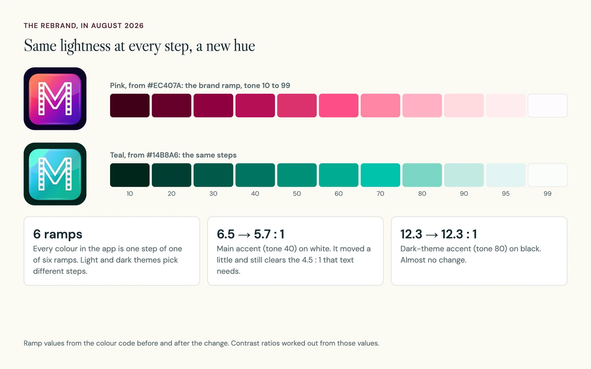
In the build: in August I rebuilt the interface on Material Design 3, Google's design system for Android. Every colour in the app is one step of one of six tonal ramps, a ramp being a set of shades from near black to near white. Light and dark themes pick different steps from the same ramps.
So the rebrand was a hue change. Each step kept its lightness and strength of colour. The app icon was recoloured by shifting the hue of its pixels, which kept its shading.
One thing slipped. The dark theme uses true black surfaces, and I had tuned those by hand against the pink. After the swap they still had a pinkish-brown cast. I fixed them in the same change.
07 Decision 5
The window's width decides the layout, not the device
What you see: on a phone, the four places sit in a bottom bar and posters run three across. On a wider window the bar becomes a side rail and the grid widens, up to seven posters.
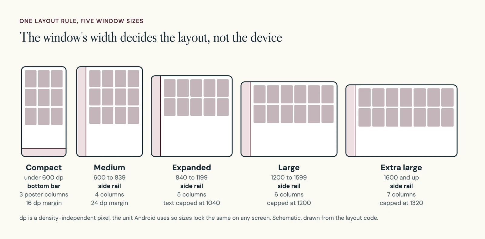
In the build: one hook reads the window width and returns the size class, the margin, the number of poster columns and the number of stats columns. Every responsive screen reads from it, so a phone in landscape, a foldable and a browser window behave the same way at the same width.
08 Accessibility
Every colour pair is checked, after a contrast bug I caught myself
The first light theme had a contrast bug. I caught it in a capture and fixed it four minutes later.
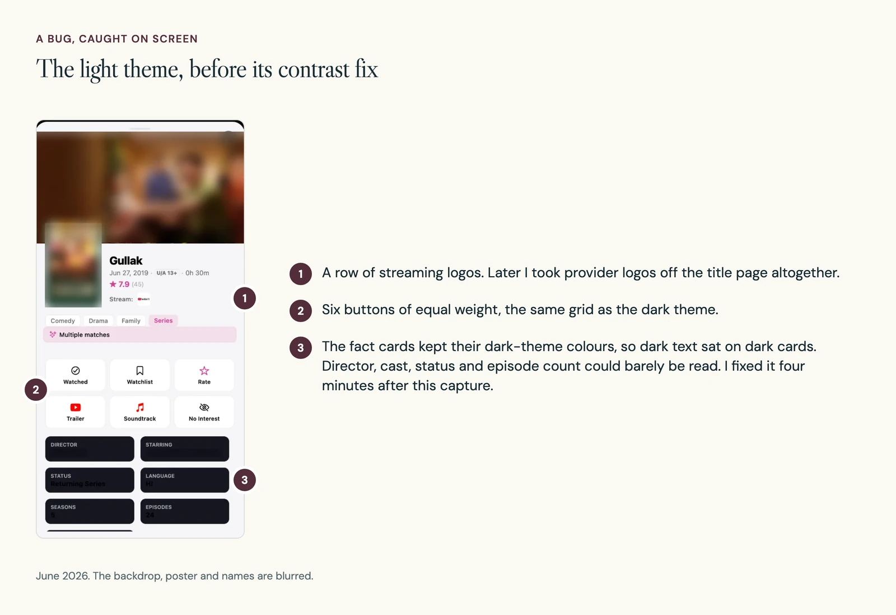
The Material 3 rebuild made contrast part of the system. These are the accessibility changes in the project history:
- The colour pairs in both themes were set to meet the WCAG AA level, the common accessibility standard: 4.5 to 1 for text, 3 to 1 for icons and other meaningful graphics.
- Touch targets are at least 48 dp. A later fix padded the last two that were too small.
- Charts carry descriptions for screen readers, and rating values are exposed to the browser.
- The phone's reduce-motion setting is respected.
- In dark mode, a toggled reminder button showed as a near-white pill. It now uses a darker container colour.
- On the web, toggle buttons were given a role name that does not exist, which turned them into unlabelled boxes a keyboard could not reach. Fixed in August.
09 The build
Everything works on the phone first, and the cloud is optional
The library lives in a database on the phone. The film data comes from TMDB, a public film and series database, using a key each person adds. Sync and the language model are optional extras.
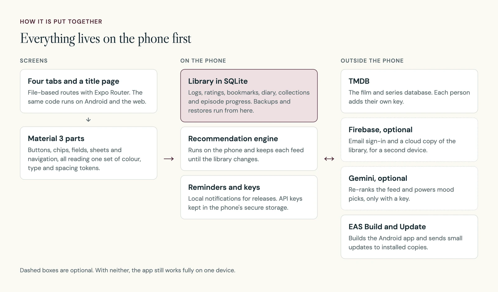
| Part | What I used |
|---|---|
| App | Expo, React Native, TypeScript, Expo Router |
| Library | SQLite on the phone, with backups and restores |
| Film data | TMDB, with the person's own key |
| Accounts and sync | Firebase email sign-in and Firestore, optional |
| Suggestions | My own scoring code, plus Gemini if a key is added |
| Builds and updates | GitHub Actions and EAS Build and Update |
Sync was the hardest part to get right. A change is saved on the phone first and queued, then sent when the app can reach the server.
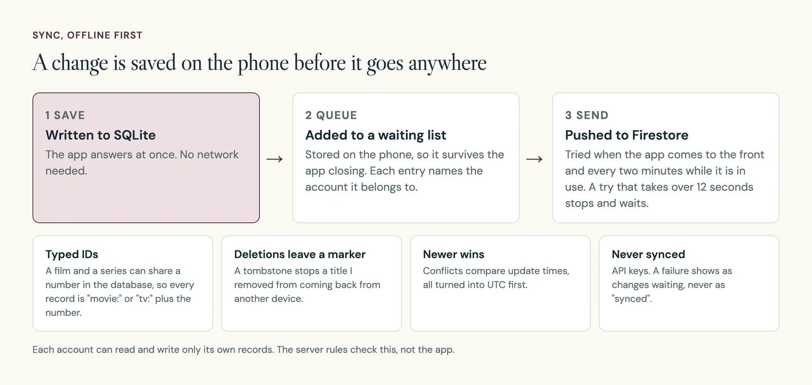
Small changes reach installed apps as an over-the-air update, with no reinstall. Anything that touches native code needs a new APK, the Android install file. A check in the build pipeline decides which one a push needs.
- 36
- commits, June to October 2026
- 23
- named checks in the regression suite, run against real SQLite in memory
- 40+
- film-database requests behind one feed, now cached until the library changes
- 6
- tonal ramps behind every colour in both themes
The October notes record 20 checks passing. The other three were added the next day, for saved keys when secure storage fails.
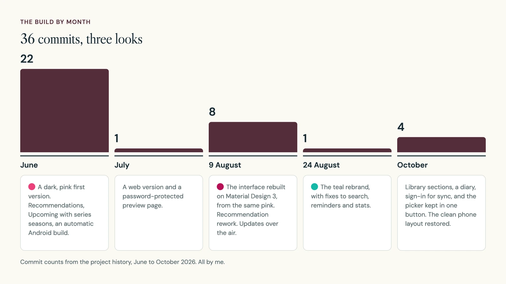
| Problem | What went wrong, and what I changed |
|---|---|
| Speed | One feed costs over 40 requests, and every visit to Discover paid it in full. The feed is now cached for three hours, and any log, rating or dismissal clears it. |
| Same number, two titles | A film and a series can share an ID in TMDB, so one could overwrite the other. Every record now carries its type as well as its number. |
| Titles coming back | A title removed on one phone could return from the cloud copy. Deletions now leave a marker, and re-adding a title does not bring back its old rating. |
| Keys and accounts | Sync used to be tied to the API key. In October it moved to email accounts, and keys stopped leaving the phone. |
| Updates that never arrive | An APK built before update channels were set up reports "up to date" forever. Settings now shows the channel, so a build that needs replacing is visible. |
10 Where it stands
A working app, with its newest screens still to be checked on a phone
Matinee is at version 1.1.0. It runs as an Android app, with a web version as a companion. It needs a TMDB key to show any films, and a Gemini key only for the optional extras.
I use Matinee every day myself.
I have no usage numbers or feedback to report. These are also not done yet:
- I have not measured how good the suggestions are.
- The October changes, including the Library tools and the title page, still need a visual check on a real phone. I have no screenshots of the teal design yet.
- Account sync is tested against an in-memory database. It still has to be tried on a second phone against the live project.
11 What is next
Check it on the phone, then test the suggestions
- Run the device checks: layout, screen reader, notifications and sign-in.
- Capture the teal design on the phone and replace the schematic on this page.
- Test the suggestions: compare a new profile with one that has a rated history, and ask people why each pick feels relevant or repetitive.
12 What I learned
Weight the evidence, and keep the system whole
Counting how many sources agreed on a title gave me a popularity chart. Weighting each source by how much I liked it gave me my own feed. The data was the same both times.
The colour system turned a rebrand into a single change, except for the one table I had tuned by hand. That table was the only part that went wrong.
Turn a time and place into a sky to keep.